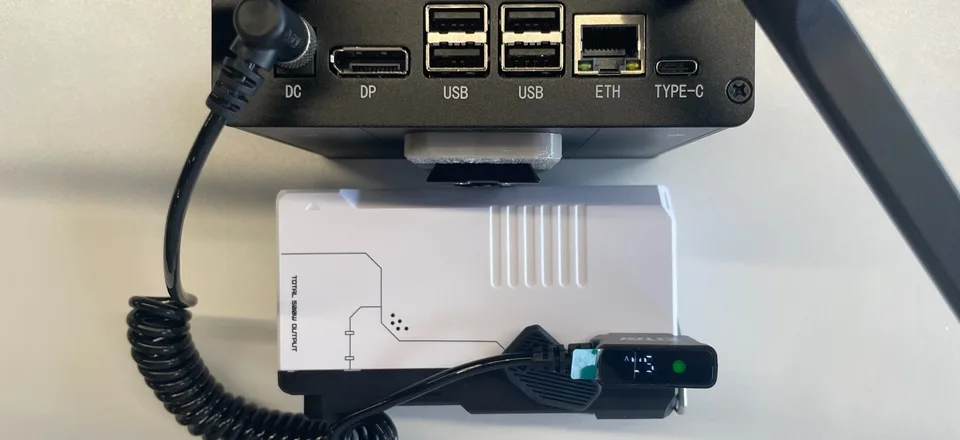
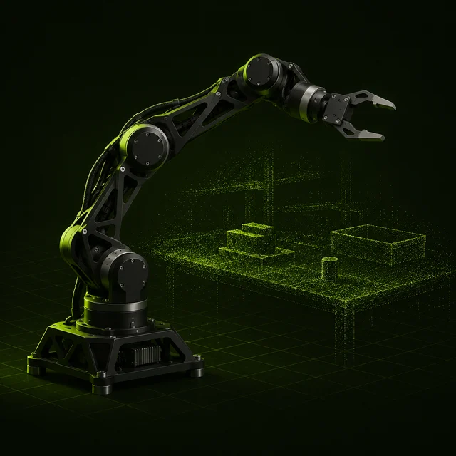

SELECTED WORK
项目档案
从现场采集到机器人执行。每个项目都附公开仓库，可查看实现和复现说明。
-
采集硬件实拍 -

导航实验截图 -
-
-
-
-
学习与控制
Kinova STOMP Motion Planning
用 STOMP 优化机械臂避障轨迹，在 MATLAB 中比较不同机器人模型，并探索末端姿态约束对规划结果的影响。
GitHub 仓库 -
ABOUT
关于我
牛牧 NIU MU
我关注机器人在真实环境里怎么工作。
在新加坡国立大学的毕业设计里，我把不同 SLAM 算法接到同一台移动机器人上，观察定位差异如何传到导航。在多相机采集和桌面机械臂实验里，这些问题延伸到了数据一端：多路画面能否对齐，录下的动作能否训练，结果能否在真机上复现。
- 多传感器采集
- 机器人数据
- 导航与操作
CONTACT
一起聊聊机器人。
对项目实现或复现实验有问题，欢迎在对应仓库开 Issue 交流。